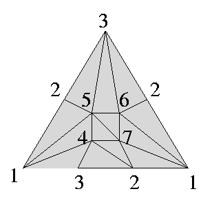

Non-extendably shellable example
- Description
-

The vertices with the same labling are identified.
- Properties
-
Shellable but not extendably shellable.
That this example is contractible and that {1,3} is the only boundary part
imply that every shelling should end by {1,3,4}. Thus not extendably
shellable. (Partial shellings started from {1,3,4} can not be completed.)
- Datum
-
nonextend.dat
- Some table
-
| vertex decomposable? | no |
| extendably shellable? | no |
| shellable? | yes |
| constructible? | yes |
| Cohen-Macaulay? | yes |
| topology | contractible |
| f-vector | (1,7,19,13) |
| h-vector | (1,4,8,0) |
| made by | Hachimori |
- References
- M.Hachimori,
Combinatorics of constructible complexes, PhD thesis.
Return